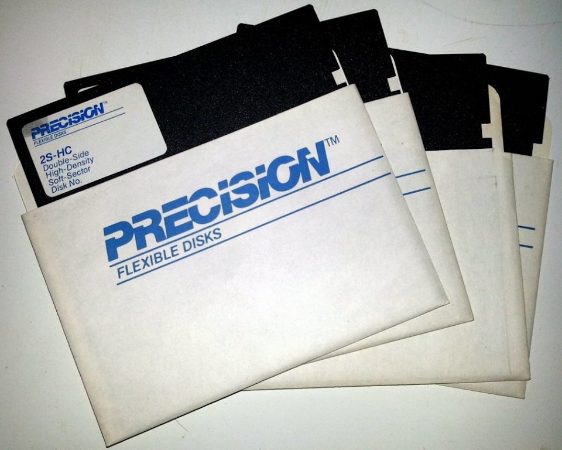

7 grudnia 2017
Pecet u mnie w domu pojawił się dość wcześnie, bo gdzieś w 1990, może na początku 1991 roku. Większość kolegów w tamtych czasach, o ile w ogóle wiedziała co to jest komputer, posiadała Spectruma, albo małe Atari. Czasy Pegasusa w co drugim polskim domu chyba jeszcze nie nadeszły.

W ogóle jestem dość dziwnym przypadkiem gracza, bo wspomniany wyżej PC był moim pierwszym komputerem: procesor 286, nierozszerzalne 1 MB RAM, brak HDD, stacja dysków 5,25″ oraz karta graficzna Hercules z bursztynowym monitorem. A wszystko to sygnowane marką Hyundai. Tak, ten sam Hyundai, który wkrótce potem zaczął podbijać zachodnie rynki motoryzacyjne. Nie oznacza to, że nigdy nie miałem ośmiobitowca. PC został zakupiony przez ojca w celu czysto profesjonalnym – pisał wtedy pracę doktorską. Ja swój pierwszy własny komputer Commodore 64 otrzymałem dwa lata później, jako prezent komunijny. I po tym gdy liznąłem już trochę poważniejszych gier (na pewno po premierze Wolfensteina 3D), cofnąłem się nieco w rozwoju.
Ale zostawmy tę historię i wróćmy do moich pierwszych kontaktów z komputerem. Dla wielu osób, nie tylko tych, którzy zaczynali swoje przygody z grami w erze akceleratorów 3D, wręcz niedorzeczne wydaje się, że były kiedyś czasy, gdy komputery były po prostu zbyt szybkie. Tak było z moim ulubionym Diggerem. Napisana pod procesor 8088 z zegarem 4,77 MHz była niegrywalna na nowszych PC-tach z 80286. I nawet wyłączenie trybu turbo, zmniejszające taktowanie CPU z 12 do 8 MHz niewiele pomagało. Rozwiązaniem na to był programik o nazwie SLOW, służący wyłącznie do "zamulania" procesora. Podawało się jeszcze parametr, który określał jak bardzo uruchamiane gry mają zwalniać.
Druga przeszkoda, z jaką musiałem sobie poradzić, to karta graficzna. Oferowała co prawda rozdzielczość 720×348 pikseli, ale tylko w trybie monochromatycznym. Niektóre z posiadanych przeze mnie gier wymagały przynajmniej grafiki CGA, a więc wyświetlały jedocześnie cztery kolory z możliwych szesnastu. Tutaj z pomocą przychodził program COLOR, pozwalający emulować tryby graficzne CGA na kartach Hercules. Warte uwagi jest to, że nie tylko musiał poradzić sobie z odpowiednim wyświetleniem 4 kolorów w trybie monochromatycznym, ale również odpowiadał za upscaling rozdzielczości. Albowiem obrazy mające 320×200 lub 640×200 punktów należało wyświetlić na ekranie 720×348.
"Color" i "Slow" już mamy, a więc rozszyfrowaliśmy już połowę tytułu posta. Pod słowem "System" krył się MS-DOS, chyba w wersji 4.0. Natomiast "Gry", to wspomniany wcześniej Digger, Alley Cat i jakieś szachy oraz brydż, w które grał mój ojciec. A wszystko to mieściło się na jednej dyskietce. Mojej pierwszej dyskietce, której już chyba nigdy nie zapomnę: 5¼ cala, dwustronnej, o wysokiej gęstości zapisu i pojemności 1,2 MB, czarnego koloru, w białej kopercie z niebieskim napisem PRECISION. Zaś w prawym górnym rogu miała fioletową naklejkę z czterema słowami, odręcznie napisanymi przez pierwszoklasistę, który dopiero uczył się pisać: COLOR SLOW SYSTEM GRY.